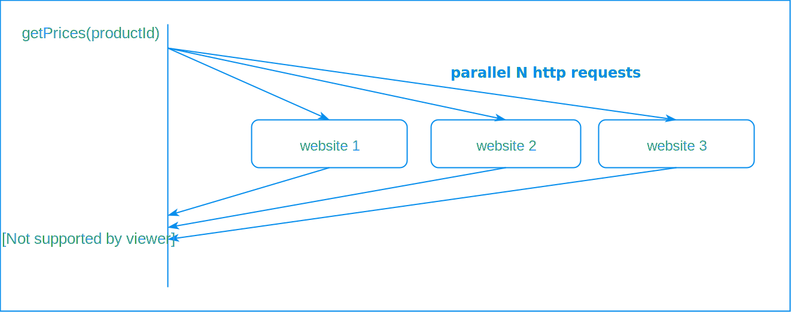

Overview
Suppose that you have to implement a function that returns the price of a product from different e-commerce websites. Such problem could be solved by making successive http requests like this :
public List<Double> getProductPrices(String productId, String... websites) {
List<Double> prices = new ArrayList<>();
for (String website : websites) {
prices.add(getProductPrice(productId, website));
}
return prices;
}
But we quickly discover that we have performance issue here: in fact, for each request, the thread blocks until he gets the response back, after that he sent another request. So what we really need is to fire asynchronously N http requests at the beginning and collect the responses at the end
WIP...